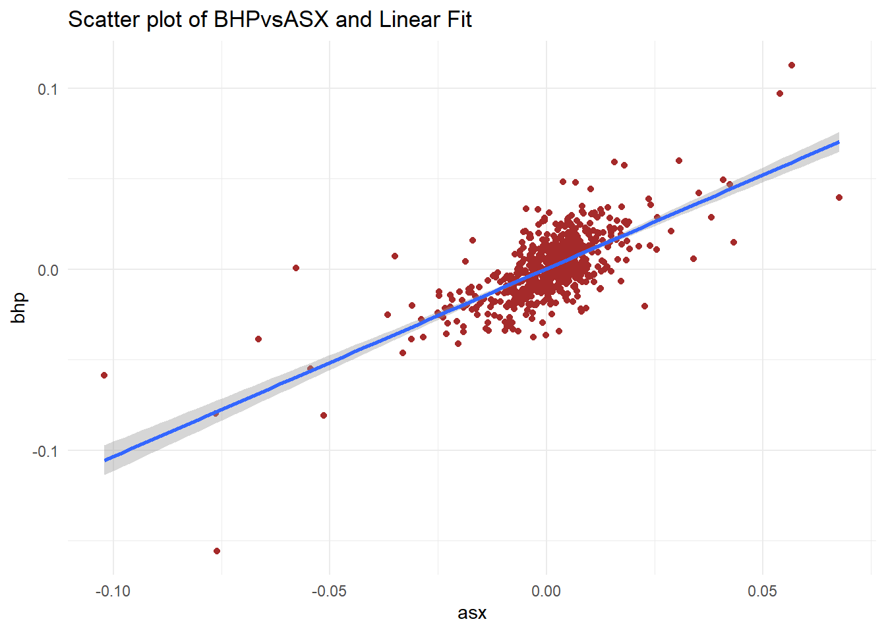
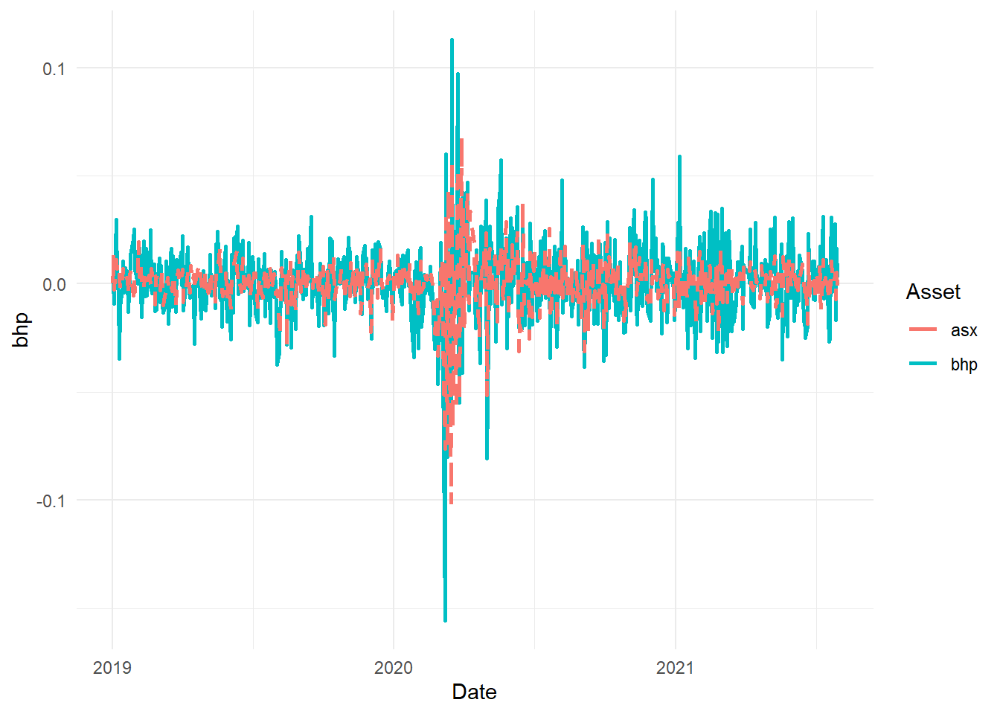
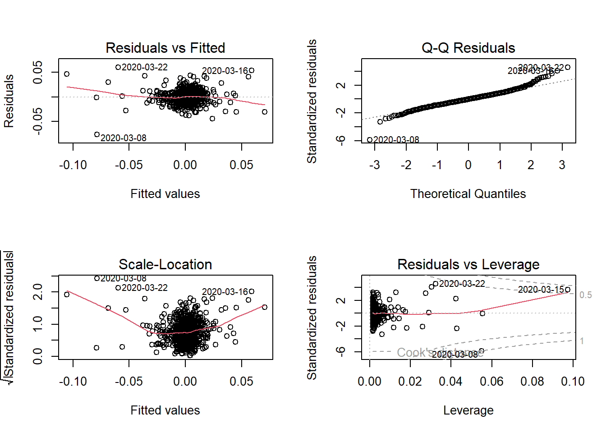

# Run the following to download and save the data, this should be
# done once and when updating the time period
library(quantmod)
library(pander)
library(xts)
library(TTR)
# download stock
BHP = getSymbols("BHP.AX", from = "2019-01-01", to = "2021-07-31", auto.assign = FALSE)
# download index
ASX = getSymbols("^AXJO", from = "2019-01-01", to = "2021-07-31", auto.assign = FALSE)
# save both in rds (to be used in the TA chapter)
saveRDS(BHP, file = "data/bhp_prices.rds")
saveRDS(ASX, file = "data/asx200.rds")Topik 7 Regresi Linear
Analisis regresi adalah salah satu alat yang paling banyak digunakan dalam penelitian kuantitatif yang digunakan untuk menganalisis hubungan antar variabel.
Satu atau lebih variabel dianggap sebagai variabel penjelas, dan yang lainnya dianggap sebagai variabel dependen.
Secara umum regresi linier digunakan untuk memprediksi variabel dependen (regressand) yang kontinu dari sejumlah variabel independen (regressor) dengan asumsi bahwa hubungan antara variabel dependen dan independen adalah linier.
7.1 Data Preprosesi
- Unduh data stok menggunakan paket quantmod R
- Mengonversi data menjadi pengembalian
- Hasilkan beberapa statistik deskriptif
- Beberapa plot
- Data
- Ubah ke pengembalian
library(quantmod)
library(pander)
library(xts)
library(TTR)
# load data from the saved files (not required if we execute the
# chunk above)
BHP = readRDS("data/bhp_prices.rds")
ASX = readRDS("data/asx200.rds")
# using close prices
bhp2 = BHP$BHP.AX.Close
asx2 = ASX$AXJO.Close
# covert to returns
bhp_ret = dailyReturn(bhp2, type = "log")
asx_ret = dailyReturn(asx2, type = "log")
# merge the two with 'inner' join to get the same dates
data_lm1 = merge.xts(bhp_ret, asx_ret, join = "inner")
# convert to data frame
data_lm2 = data.frame(index(data_lm1), data_lm1$daily.returns, data_lm1$daily.returns.1)
# change column names
colnames(data_lm2) = c("Date", "bhp", "asx")
head(data_lm2) #there are row names which can be removed if required Date bhp asx
2019-01-01 2019-01-01 0.000000000 0.000000000
2019-01-02 2019-01-02 0.000000000 0.013510839
2019-01-03 2019-01-03 -0.008947248 -0.002488271
2019-01-06 2019-01-06 0.029808856 0.011289609
2019-01-07 2019-01-07 0.001162480 0.006873792
2019-01-08 2019-01-08 -0.003782954 0.009721207library(pastecs)
desc_stat1 = stat.desc(data_lm2[, 2:3], norm = TRUE)
pander(desc_stat1, caption = "Descriptive Statistics", split.table = Inf)| bhp | asx | |
|---|---|---|
| nbr.val | 653 | 653 |
| nbr.null | 9 | 1 |
| nbr.na | 0 | 0 |
| min | -0.1557 | -0.102 |
| max | 0.1128 | 0.06766 |
| range | 0.2685 | 0.1697 |
| sum | 0.4948 | 0.2853 |
| median | 0 | 0.001163 |
| mean | 0.0007577 | 0.0004369 |
| SE.mean | 0.0007444 | 0.0005075 |
| CI.mean.0.95 | 0.001462 | 0.0009966 |
| var | 0.0003618 | 0.0001682 |
| std.dev | 0.01902 | 0.01297 |
| coef.var | 25.1 | 29.69 |
| skewness | -0.4883 | -1.443 |
| skew.2SE | -2.553 | -7.546 |
| kurtosis | 9.991 | 13.32 |
| kurt.2SE | 26.16 | 34.86 |
| normtest.W | 0.9198 | 0.8266 |
| normtest.p | 3.885e-18 | 5.497e-26 |
7.2 Visualisasi
library(ggplot2)
library(tidyr)
p1 = ggplot(data_lm2, aes(asx, bhp))
p1 + geom_point(colour = "brown") + geom_smooth(method = "lm") + theme_minimal() +
labs(title = "Scatter plot of BHPvsASX and Linear Fit")
p2 = ggplot(data_lm2, aes(Date))
p2 + geom_line(aes(y = bhp, color = "bhp"), size = 1, lty = 1) + geom_line(aes(y = asx,
color = "asx"), size = 1, lty = 2) + scale_color_discrete("Asset") +
theme_minimal() + labs("Line Chart of Returns")
7.3 Analisis Regresi menggunakan lm
- Gunakan model SIM method
lreg1 = lm(formula = bhp ~ asx, data = data_lm2)
summary(lreg1) #to generate main results
Call:
lm(formula = bhp ~ asx, data = data_lm2)
Residuals:
Min 1Q Median 3Q Max
-0.077007 -0.008153 -0.000162 0.007500 0.060409
Coefficients:
Estimate Std. Error t value Pr(>|t|)
(Intercept) 0.0003046 0.0005270 0.578 0.564
asx 1.0372280 0.0406422 25.521 <2e-16 ***
---
Signif. codes: 0 '***' 0.001 '**' 0.01 '*' 0.05 '.' 0.1 ' ' 1
Residual standard error: 0.01346 on 651 degrees of freedom
Multiple R-squared: 0.5001, Adjusted R-squared: 0.4994
F-statistic: 651.3 on 1 and 651 DF, p-value: < 2.2e-16pander(lreg1, add.significance.stars = T) #to tabulate| Estimate | Std. Error | t value | Pr(>|t|) | ||
|---|---|---|---|---|---|
| (Intercept) | 0.0003046 | 0.000527 | 0.5779 | 0.5635 | |
| asx | 1.037 | 0.04064 | 25.52 | 4.215e-100 | * * * |
- Gunakan Stargazer untuk menampilkan resuly
library(stargazer)
stargazer(lreg1, type = "text", title = "Regression Results")
Regression Results
===============================================
Dependent variable:
---------------------------
bhp
-----------------------------------------------
asx 1.037***
(0.041)
Constant 0.0003
(0.001)
-----------------------------------------------
Observations 653
R2 0.500
Adjusted R2 0.499
Residual Std. Error 0.013 (df = 651)
F Statistic 651.320*** (df = 1; 651)
===============================================
Note: *p<0.1; **p<0.05; ***p<0.01- Diagnostik Plot
par(mfrow = c(2, 2))
plot(lreg1)